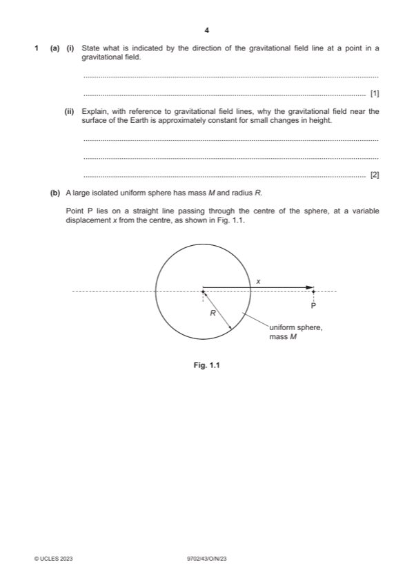

Question 1

Original paper page 4
Part 1(a)(i) — solution
- [B1] Obtain/use: direction of the force acting on a (test) mass placed at the point
Mark points
- [B1] Obtain/use: direction of the force acting on a (test) mass placed at the point
Part 1(a)(ii) — solution
- [B1] Obtain/use: change in height negligible compared with radius (of Earth)
- [B1] Obtain/use: (so) field lines are (effectively) parallel
Mark points
- [B1] Obtain/use: change in height negligible compared with radius (of Earth)
- [B1] Obtain/use: (so) field lines are (effectively) parallel
Part 1(b)(i) — solution
- [M1] Obtain/use: Y = GM / R2
- [A1] Obtain/use: G is the gravitational constant
Mark points
- [M1] Obtain/use: Y = GM / R2
- [A1] Obtain/use: G is the gravitational constant
Part 1(b)(ii) — solution
- [B1] Obtain/use: gravitational force is (always) attractive
- [B1] Obtain/use: force is in opposite direction to displacement
Mark points
- [B1] Obtain/use: gravitational force is (always) attractive
- [B1] Obtain/use: force is in opposite direction to displacement
Part 1(b)(iii) — solution
- [B1] Obtain/use: sketch: smooth curve with decreasing positive gradient, starting at (R, –Y) and reaching 3R with g still negative
- [B1] Obtain/use: both of the above curves, in correct quadrants
- [B1] Obtain/use: curve passing through (2R, 0.25Y) and (3R, 0.11Y)
Mark points
- [B1] Obtain/use: sketch: smooth curve with decreasing positive gradient, starting at (R, –Y) and reaching 3R with g still negative
- [B1] Obtain/use: both of the above curves, in correct quadrants
- [B1] Obtain/use: curve passing through (2R, 0.25Y) and (3R, 0.11Y)
Part 1 — solution
mark for any two points, 2 marks for all three points
Mark points
- Include the ideas shown in the solution above.